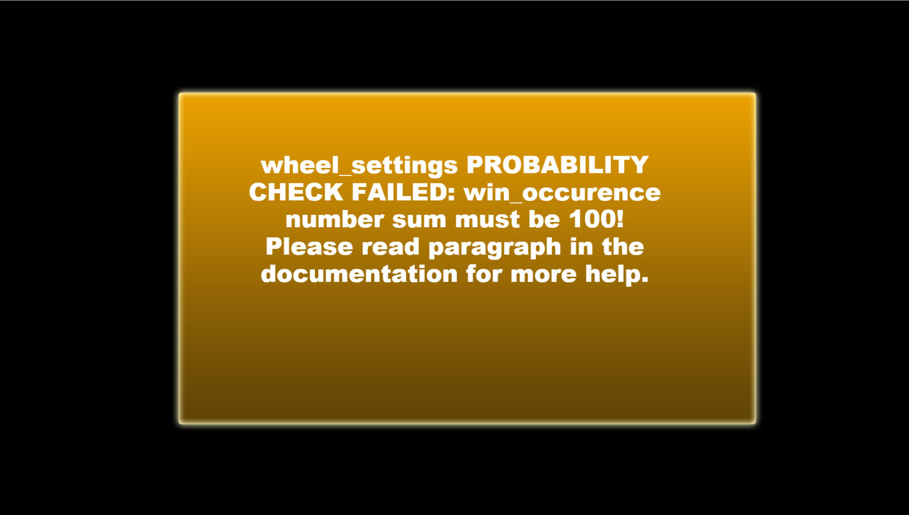

“Wheel of Fortune” Documentation by “Code This Lab S.r.l.” v1.0
“Wheel of Fortune”
Created: 15/04/2015
By: Code This Lab S.r.l.
Email: info@codethislab.com
Thank you for purchasing our game. If you have any questions that are beyond the scope of this help file, please feel free to email via user page contact form here. Thanks so much!
Table of Contents
- Description
- Folder Content
- Getting Started
- HTML Structure
- CSS Files and Structure
- JavaScript
- Game functions
- Change Graphic
- Disable Sounds
- Win Occurence
- Wordpress Plugin
A) Description - top
Wheel of Fortune is a HTML5 Gambling Game. Enjoy this stylish Wheel of Fortune bonus game!
The ZIP package contains the game with 1920x1080 resolution that scales proportionally to fit the whole screen device
Just warning that for very wide screens, the game may not be perfectly full screen.
The game is fully compatible with all most common mobile devices.
Sounds are enabled for mobile but we can't grant full audio compatibility on all mobile devices due to some well-know issue between some mobile-browser and HTML5.
So if you want to avoid sound loading, please read Disable Sound section).
WARNING: Sounds can't be enabled for Windows Phone as this kind of device have unsolved issues with 'audio' and 'video' tag.
B) Folder Content - top
- ctl_arcade_wp_plugin: This folder contains the zip package that can be used with our Wordpress plugin "CTL Arcade" (http://codecanyon.net/item/ctl-arcade-wordpress-plugin/13856421).
- game This folder contains the full game source code ready to be edited.
- live_demo This folder contains the obfuscated code. You should upload this folder on your server if you don't need to make any changes.
- readme This folder contains the package instructions.
- thumbs This folder contains all game icons.
C)Getting Started - top
To install the game just upload on your server the game folder live_demo.
- Game Embedding: The proper way to embed the game is in a full-screen web page or in an iframe.
In the first case the game will fit the screen size, in the second, that of the iframe.
If the iframe size matches that of the screen, the game will fit accordingly.
The alignment will be proportioned to the aspect ratio of the game.
To install the game in a WordPress website, we suggest to use our plugin CTL Arcade .
- Save Score: You can call your php function that saves user credit and current win in this function in index.html file:
$(document).ready(function(){ var oMain = new CMain(); $(oMain).on("save_score", function(evt,iScore) { //alert("iScore: "+iScore+" WIN: "+iWin); }); }); - Localization: You can easily change game text for different languages, changing string in CLang.js
TEXT_GAMEOVER = "I'M SORRY, NO MORE CREDITS TO PLAY"; TEXT_PLAY = "PLAY"; TEXT_CREDITS = "CREDITS"; TEXT_SPIN = "SPIN"; TEXT_PLUS = "+"; TEXT_MIN = "-"; TEXT_CURRENCY = "$"; TEXT_HELP1 = 'CLICK ON "+" or "-" BUTTONS TO SELECT YOUR BET. PRIZE WILL VARY ACCORDING TO THE WAGER. THE MORE YOU BET, THE MORE YOU CAN WIN. WHEN YOU ARE READY, SPIN THE WHEEL TO PLAY!'; TEXT_HELP2 = "WHEN THE WHEEL STOPS SPINNING, YOU'LL BE SHOWN YOUR PRIZE!"; TEXT_ALERT = "wheel_settings PROBABILITY CHECK FAILED: win_occurence number sum must be 100! Please read paragraph in the documentation for more help."; var TEXT_CREDITS_DEVELOPED = "DEVELOPED BY"; TEXT_SHARE_IMAGE = "200x200.jpg"; TEXT_SHARE_TITLE = "Congratulations!"; TEXT_SHARE_MSG1 = "You collected "; TEXT_SHARE_MSG2 = " points!
Share your score with your friends!"; TEXT_SHARE_SHARE1 = "My score is "; TEXT_SHARE_SHARE2 = " points! Can you do better?";
var oMain = new CMain({
start_credit: 200, //Starting credits value
start_bet: 10, //Base starting bet. Will increment with multiplier in game
bet_offset: 10, //Bet Offset
max_bet: 100, //Max multiplier value
bank_cash : 500, //Starting credits owned by the bank. When a player win, founds will be subtract from here. When a player lose or bet, founds will be added here. If 0 players always lose.
//wheel_settings sets the values and probability of each prize in the wheel ([prize, win occurence percentage]). Value*max_bet can't exceed 9999999.
//PAY ATTENTION: the total sum of win occurences must be 100!
//prize=0 or less, is considered as "lose". So Leds will play a lose animation.
wheel_settings: [
{prize:10,win_occurence:7}, {prize:30,win_occurence:6}, {prize:60,win_occurence:6}, {prize:90,win_occurence:6}, {prize:0,win_occurence:5},
{prize:20,win_occurence:6}, {prize:60,win_occurence:5}, {prize:120,win_occurence:4}, {prize:200,win_occurence:3}, {prize:0,win_occurence:5},
{prize:40,win_occurence:5}, {prize:30,win_occurence:5}, {prize:20,win_occurence:6}, {prize:10,win_occurence:7}, {prize:0,win_occurence:5},
{prize:80,win_occurence:4}, {prize:60,win_occurence:4}, {prize:40,win_occurence:5}, {prize:1000,win_occurence:1}, {prize:0,win_occurence:5}
],
anim_idle_change_frequency: 10000, //Duration (in ms) of current led idle animation, before it change with another.
led_anim_idle1_timespeed: 2000, //Time speed (in ms) of led animation idle 1. Less is faster.
led_anim_idle2_timespeed: 100, //Time speed (in ms) of led animation idle 2. Less is faster.
led_anim_idle3_timespeed: 150, //Time speed (in ms) of led animation idle 3. Less is faster.
led_anim_spin_timespeed: 50, //Time speed (in ms) of led animation spin. Less is faster.
led_anim_win_duration: 5000, //Duration (in ms) of current led win animation, before it change with the idle.
led_anim_win1_timespeed: 300, //Time speed (in ms) of led animation win 1. Less is faster.
led_anim_win2_timespeed: 50, //Time speed (in ms) of led animation win 2. Less is faster.
led_anim_lose_duration: 5000, //Duration (in ms) of led lose animation, before it change with the idle.
show_credits:true, //SET THIS VALUE TO FALSE IF YOU DON'T WANT TO SHOW CREDITS BUTTON
fullscreen:true, //SET THIS TO FALSE IF YOU DON'T WANT TO SHOW FULLSCREEN BUTTON
check_orientation:true, //SET TO FALSE IF YOU DON'T WANT TO SHOW ORIENTATION ALERT ON MOBILE DEVICES
//////////////////////////////////////////////////////////////////////////////////////////
ad_show_counter: 5 //NUMBER OF SPIN BEFORE AD SHOWN
//
//// THIS FUNCTIONALITY IS ACTIVATED ONLY WITH CTL ARCADE PLUGIN.///////////////////////////
/////////////////// YOU CAN GET IT AT: /////////////////////////////////////////////////////////
// http://codecanyon.net/item/ctl-arcade-wordpress-plugin/13856421?s_phrase=&s_rank=27 ///////////
});
D)HTML Structure - top
This game have the canvas tag in the body. The ready event into the body calls the main function of the game: CMain().
The head section declares all the javascript functions of the game. The whole project uses a typical object-oriented approach.
In the init function there are 5 mapped events that can be useful eventually for stats
E) CSS Files and Structure - top
The game use two CSS files. The first one is a generic reset file. Many browser interpret the default behavior of html elements differently. By using a general reset CSS file, we can work round this. Keep in mind, that these values might be overridden somewhere else in the file.
The second file contains all of the specific stylings for the canvas and some hack to be fully compatible with all most popular mobile devices
F) JavaScript - top
This game contains:
- jQuery
- Our custom scripts
- CreateJs plugin
- Howler Sound library
- jQuery is a Javascript library that greatly reduces the amount of code that you must write.
- The game have the following js files:
- CMain: the main class called by the index file.
This file controls the sprite_lib.js file that manages the sprite loading, the loop game and initialize the canvas with the CreateJs library - ctl_utils: this file manages the canvas resize and its centering
- sprite_lib: this class loads all images declared in the main class
- settings: general game settings
- CLang: global string variables for language localization
- CPreloader: simple text preloader to show resources loading progress
- CMenu: simple menu with the play button
- CGfxButton: this class create a standard button
- CToggle: this class create a standard toggle button
- CTextButton: this class create a standard text button
- CGame: this class manages the game logic
- CInterface: this class controls game GUI that contains text and buttons
- CEndPanel: the final game over panel
- CHelpPanel: the help panel that is shown before game starting
- CFormatText: this class manages the texts on the wheel
- CLeds: this class manages the led animation of the wheel
- CWheel: this class manages the wheel and its animations
- CMain: the main class called by the index file.
- CreateJs is a suite of modular libraries and tools which work together to enable rich interactive content on open web technologies via HTML5.
- Howler is a javascript Audio library.
Resuming, the complete game flow is the following:
- The index.html file calls the CMain.js file after ready event is called
- The main class calls CPreloader.js to init preloader text and start sprite loading
- When all sprites contained in "/sprites" and "/sounds" folder are loaded, the main class removes the preloader and calls the CMenu.js file that shows the main menu
- If the user click the Play button in main menu, the CGame.js class is called and the help panel is shown
- When the user click the Help Panel, the game starts
- When player run out of money, the game calls the Game Over Panel and game restarts
- If the user click on the exit button in the up-right corner, the game returns to the menu screen
G) Game functions - top
In this section will be explained all the most important functions used in CGame.js file.- _init()
This function attach on the canvas some game sprites like background (oBg), GUI and the wheel. - _initProbability()
This function set the prize probability. - modifyBonus()
This function is called when user click "+" or "-" buttons. - spinWheel
This function is called when the spin button is clicked. - releaseWheel()
This function is called when the wheel stops and the game must assign the prize. - gameOver()
This function is called when the player get out of money. - update
This function manages the main game loop.
H) Change Graphic - top
You can easily change all the game graphic, replacing all the file you need in the "/sprites" folder. Just respect file format (.png or .jpg) and size if you don't want to change any code line.
I) Disable Sounds - top
If you want to disable all the sounds for mobile devices, you have to change the following value in settings.js file:
var DISABLE_SOUND_MOBILE = true;
J) Win Occurence - top
You can change default win occurrences for each prize on the wheel. Each prize is rappresented by two values:
{prize:20,win_occurence:6}WHERE 'prize' label stand for money amount that player can win, while 'win_occurence' stand for percentage. So in the example above you have 6% to get 20$. BE CAREFUL! The sum of all win occurences MUST BE 100 or the game won't play!

K) Wordpress Plugin - top
CTL Arcade will allow you to add a real arcade on your worpress website, in this way your users will be more involved and will stay connected longer.
It's possible to add Ads banner at the beginning of each game and at the end of each level. This will give you a new tool to increase your revenues.
Your own users will promote your website sharing their scores on the main Social Networks, with no extra costs for you.
You'll get by default the score-sharing on Twitter. To add Facebook just follow the guideline below.
3 widgets can be added in your pages through a shortcode.
- Game iframe
- Rate the Game
- Leaderboard
- PHP 4.3
- WordPress 4.3.1
- HTML5
- Canvas
- Javascript / jQuery
You can find it here!

Once again, thank you so much for purchasing this game. Fell free to contact us if you have any questions or issue relating to this game. No guarantees, but we'll do our best to assist.